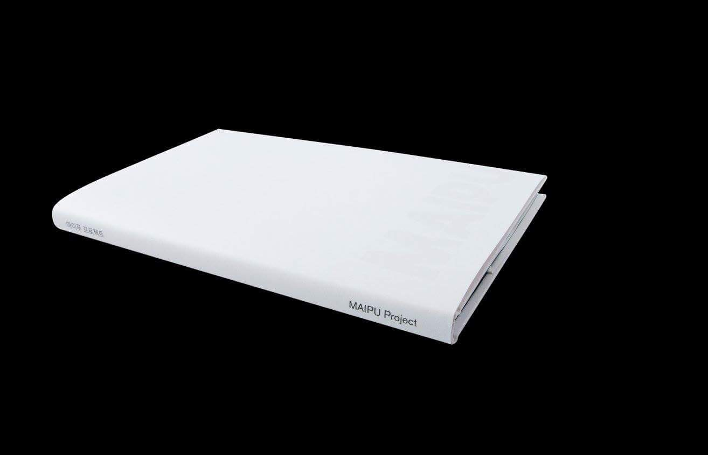
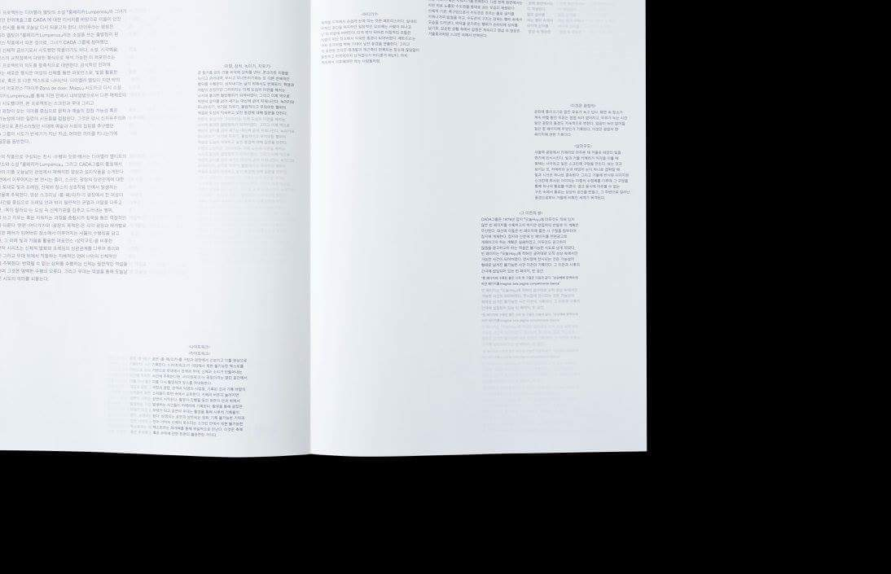
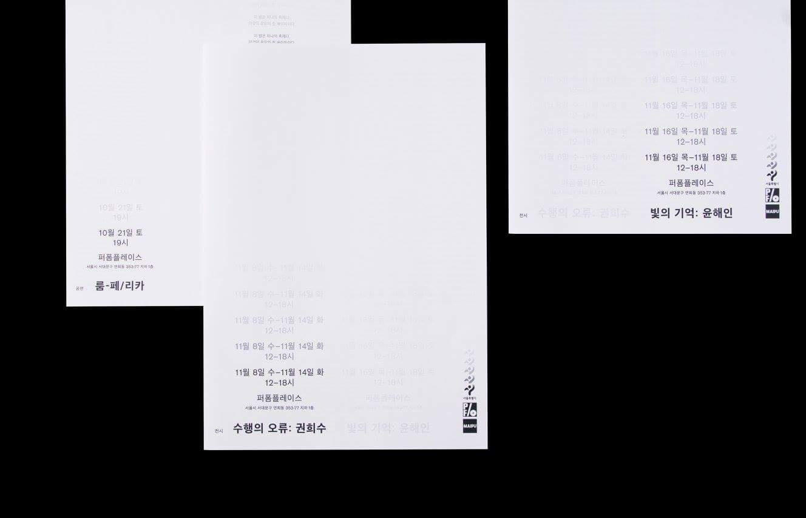
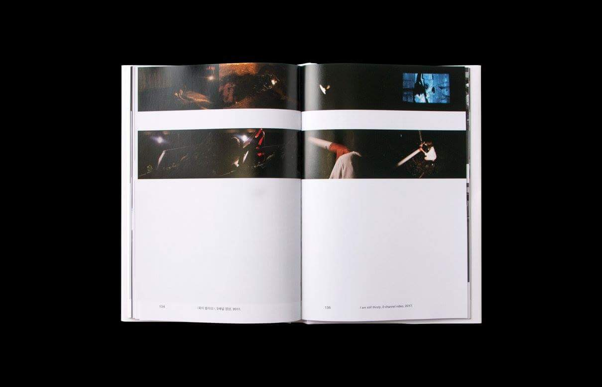
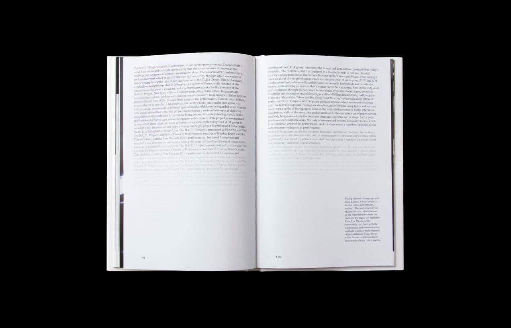
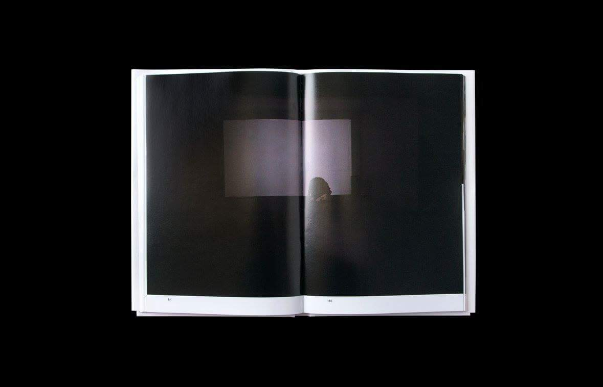
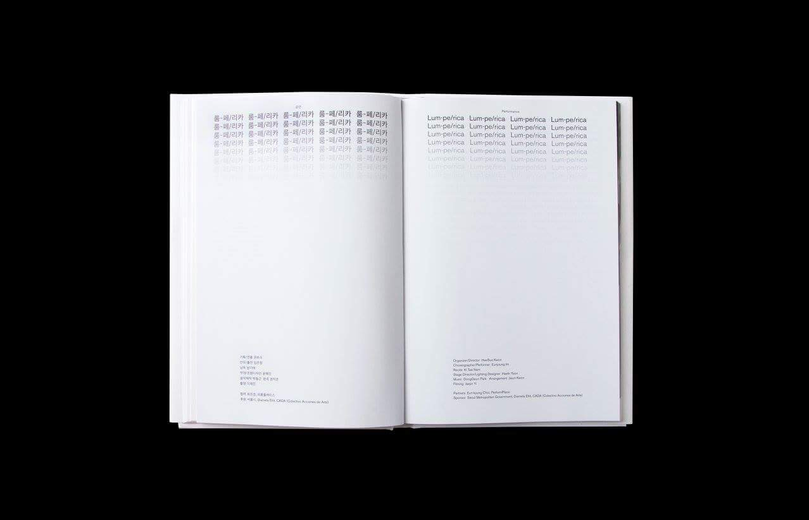
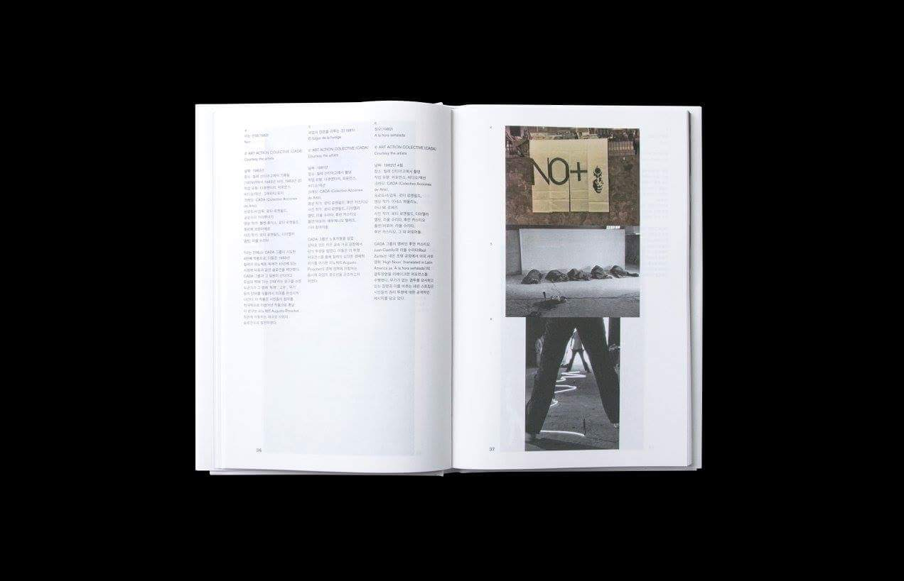
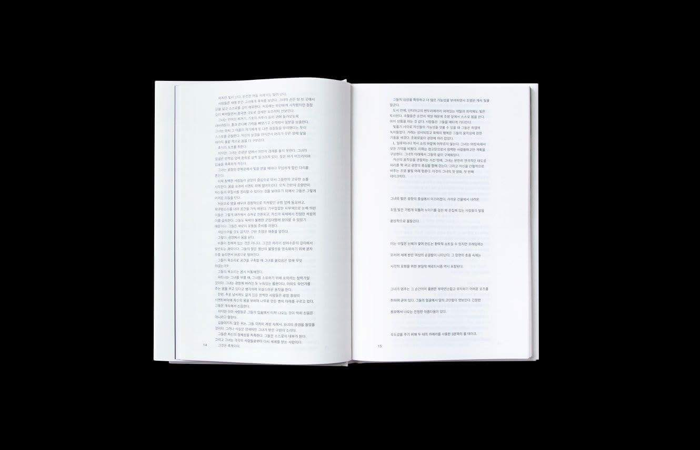
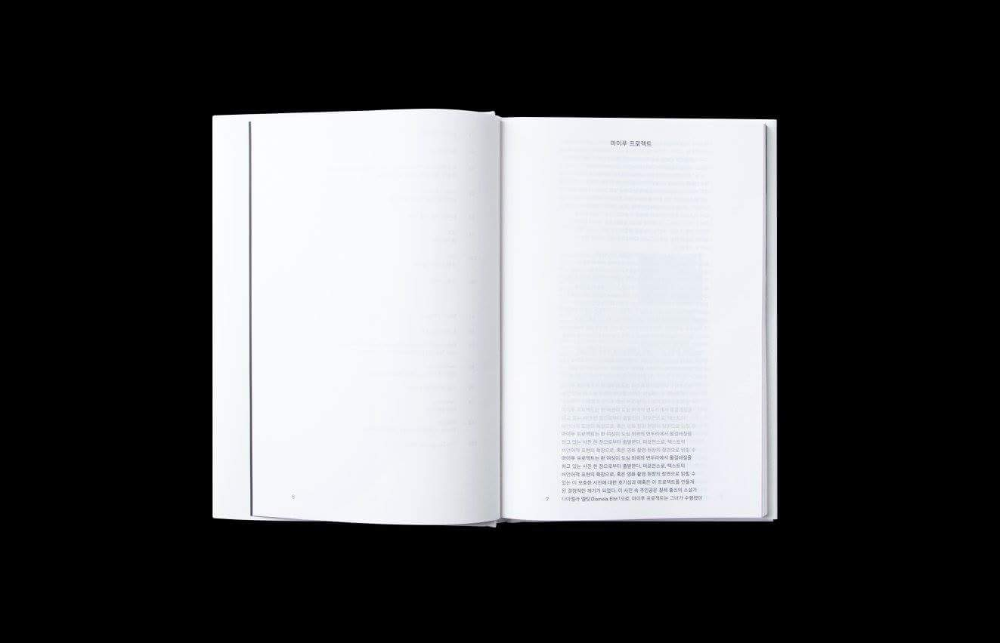

MAIPU Project
마이푸프로젝트, 2018
글: 권희수, 최은경(삽입논문)
편집: 권희수
번역: 신현주
교정: 권지은
이미지 제작: 권희수
이미지 제공: Diamela Eltit, CADA(Colectivo Acciones de Arte)
후원: 서울시, Diamela Eltit, CADA(Colectivo Acciones de Arte)
디자인: 프랙티스
로고디자인: 권해나
인쇄 및 제책
발행일 2017년
© 권희수
© 최은경
© ART ACTION COLECTIVE (CADA)
Courtesy the artists
© DIAMELA ELTIT
Courtesy the artist
MAIPU Project, 2018
Text: Heesue Kwon, Choi Eun-kyung (inserted paper)
Editor: Heesue Kwon
Translation: Shin Hyun-joo
Proofreading: Kwon Ji-eun
Image production: Heesue Kwon
Image provided by: Diamela Eltit, CADA (Colectivo Acciones de Arte)
Sponsored by: Seoul City, Diamela Eltit, CADA (Colectivo Acciones de Arte)
Design: Practice
Logo design: Kwon Hae-na
Printing and binding
Date of publication 2017
© Heesue Kwon
© Choi Eun-kyung
© ART ACTION COLECTIVE (CADA)
Courtesy the artists
© DIAMELA ELTIT
Courtesy the artist










마이푸 프로젝트
마이푸 프로젝트는 한 여성이 도심 외곽의 변두리에서 물걸레질을 하고 있는 사진 한 장으로부터 출발한다. 퍼포먼스로, 텍스트의 비언어적 표현의 확장으로, 혹은 영화 촬영 현장의 장면으로 읽힐 수 있는 이 모호한 사진에 대한 호기심과 매혹은 이 프로젝트를 만들게 된 결정적인 계기가 되었다. 이 사진 속 주인공은 칠레 출신의 소설가 디아멜라 엘팃(Diamela Eltit, 1949-)으로, 마이푸 프로젝트는 그녀가 수행했던 퍼포먼스 이름 『마이푸(Zona de door : Maipú)』 에서 따온 명칭이다. 이번 프로젝트는 그녀가 『마이푸(Zona de door : Maipú)』 를 계기로 쓴 소설 『룸페리카(Lumpérica)』와 그녀가 활동했던 CADA 그룹에 대한 리서치를 바탕으로, 이들이 던진 질문을 오늘날의 관점에서 다시 바라보고자 기획하게 되었다.
소설 『룸페리카(Lumpérica)』는 당시 혼란스러웠던 시대적 상황에서 작가가 퍼포먼스를 기반으로 쓴 실험적인 소설이다. 결코 말로 표현할 수 없는 상황 속에서 스스로 추방의 길을 택한 그녀는 언어 안에서 내부 망명을 시도한다. 이러한 소리 없는 외침은 신체적 몸짓으로, 이미지로 변주되어 나타난다. 총 10장으로 이루어진 이 텍스트는 영화적 기법과 퍼포먼스의 묘사 텍스트의 분절이 혼용된 형태로 각 장마다 다른 기법과 형식을 취하고 있다. 그녀는 소설을 통해 문학과 언어가 취할 수 있는 극한의 가능성을 실험하고자 했다. 그것은 당시 칠레의 암울한 현실 속에서 그녀가 지켜내야만 했던 세계의, 문학의 마지막 보루였다.
『룸페리카(Lumpérica)』가 텍스트 안에서 이러한 실험을 시도했다면, 그녀가 참여했던 CADA 그룹은 이러한 가능성을 액팅 아웃을 통해 실천하고자 했다. 당시 소설가, 시각예술가, 사회학자가 모여서 결성한 전위예술그룹 CADA의 활동은 1970년대 독재정치의 억압과 신자유주의 물결의 홍역을 겪고 있던 칠레의 혼란스러운 시대적 상황을 관통한다. CADA 그룹은 사회와 정치를 재현하는 목적으로서 예술이 아닌, 그와 동등한 위치에서 스스로 발언할 수 있는 예술의 가능성을 보여주고자 했다. 이들은 칠레 산티아고 광장을 주 무대로 삼아 퍼포먼스를 시도하고 익명의 시민들의 참여를 이끌며 예술과 삶의 최전선에서 하나의 운동으로서 그 가능성을 실험했다. 이러한 협업은 당시 절박한 시대적 상황 속에서 나타난 문학과 예술의 실천적 확장인 동시에 그들에게 남은 마지막 장소를 지켜내기 위한 필연적인 투쟁이었다.
1970년대, 한국과 칠레는 매우 유사한 역사적 동기를 거쳐 왔다. 정치와 경제의 급진적인 변화 속에 그 양면성을 온몸으로 견뎌내면서 새겨진 상처는 여전히 남아있다. 한국은 지난겨울, 그 잔재적인 상처를 목격했고 가능성과 불가능성의 경계에서 과거와 미래가 중첩된 역사를 대면했다. 지구와 시간의 반대편에 서서 서로의 얼굴을 마주 보았을 때 우리는 무엇을 발견할 수 있을까. 시대의 벼랑 끝에서 언어의 한계로부터 디아멜라 엘팃이 다시 발견한 것은 문학의 공간이었다. 그것은 추락의 끝에서 마주한 불가능한 가능성이다. 예술의 접점 끝에서, 다시 무대의, 텍스트의, 이미지의 장소를- 나아가 이 시대의 얼굴을 마주 볼 수 있게 될까. 마이푸 프로젝트는 텍스트 안에서 스스로 추방을 선언한 내부 망명자의 독백과 선언에 대한 응답이다.
텍스트의 바깥, 무대과 신체의 장소에서 문학과 마주 보았을 때 찾게 되는 것은 무엇일까. 통합의 가능성과 불가능성, 이 모순된 중첩 속에서 신체의 기억과 역사적 상처는, 예술과 정치는, 삶과 운동은 그 접촉 속에서 스스로의 이름을 호명할 수 있을까.
마이푸 프로젝트는 소설과 자료 사용을 허락해주신 CADA 그룹과 디아멜라 엘팃(Diamela Eltit), 그녀의 문학을 연구하신 최은경 선생님의 협력과 도움으로, CADA 그룹과 『룸페리카(Lumpérica)』에 대한 자료를 소개할 수 있었다. 아울러 마이푸 프로젝트는 그들이 던진 질문을 오늘날의 관점에서 재해석한 퍼포먼스 영상 및 사진 작품을 전시하고, 소설을 무대의 관점에서 재해석한 <룸-페/리카>를 공연한다.
말하기를 멈춘 언어는 신체적 움직임과 이미지로 발설을 시도한다. 그 끝에서 이 작품이 되돌아가는 곳은 어디일까. 전시가 보여주듯이 세계의 재현이 불가능하고 텍스트의 독해는 불완전하다. 애초에 불가능했던 그 한계의 끝에서 무대가, 이미지가 그리고 신체의 상처를 기억하고 있는 이 시대와 예술이 향하는 곳은 어쩌면 우리가 망각하고 있던 오래된 미래일지도 모른다. 과거에 대한 빛의 투사를 통해 오래전 기원으로부터 망각된 미래의 얼굴을 희미하게 비춰볼 수 있을까.
The Maipu Project
The Maipu Project began with a photograph of a woman mopping a street outside the city. The curiosity and fascination with these ambiguous photographs, which can be read as performances, as extensions of the nonverbal expression of texts, or as scenes from a film set, became the decisive factor in creating this project. The main character in these photographs is Chilean novelist Diamela Eltit (1949-), and the Maipú Project is named after the performance she performed, Maipú (Zona de door: Maipú). This project was planned based on research into the novel Lumpérica, which she wrote based on Maipú (Zona de door: Maipú), and the CADA group she was a member of, in order to reexamine the questions they raised from a contemporary perspective. The novel Lumpérica is an experimental novel written by the author based on performance in a chaotic era. In a situation that can never be expressed in words, she chooses the path of self-exile and attempts internal exile within language. These silent cries are expressed in physical gestures and images. This text, consisting of a total of 10 chapters, is a form that mixes cinematic techniques and performance descriptions with segments of text, each chapter adopting different techniques and forms. Through her novels, she attempted to experiment with the extreme possibilities that literature and language can take on. It was the last bastion of literature and the world that she had to protect in the gloomy reality of Chile at the time. If 『Lumpérica』 attempted this experiment in the text, the CADA group she participated in attempted to practice this possibility through acting out. The activities of the avant-garde art group CADA, formed by novelists, visual artists, and sociologists at the time, penetrated the chaotic times of Chile, which was suffering from the oppression of dictatorship and the measles of neoliberalism in the 1970s. The CADA group attempted to show the possibility of art that could speak for itself on an equal footing, rather than art that represented society and politics. They attempted performances on the main stage of Plaza de Santiago, Chile, and led the participation of anonymous citizens, testing the possibility of a movement at the forefront of art and life. This collaboration was a practical expansion of literature and art that emerged in the desperate circumstances of the time, and at the same time, an inevitable struggle to protect the last place left for them.
In the 1970s, Korea and Chile went through very similar historical motives. The scars that were engraved while enduring the duality with their whole bodies amidst the radical changes in politics and economy still remain. Last winter, Korea witnessed those residual scars and faced a history where the past and the future overlapped at the boundary of possibility and impossibility. What will we find when we stand on opposite sides of the earth and time and face each other? What Diamela Eltit rediscovered from the limitations of language at the edge of the cliff of the times was the space of literature. It was an impossible possibility encountered at the end of a fall. Will we be able to face the face of this era again at the end of the intersection of art, the place of the stage, the text, and the image? The Maipu Project is a response to the monologues and declarations of internal exiles who declared their own exile in the text.
What do we find when we encounter literature outside the text, in the stage and the body? In this contradictory overlap of the possibility and impossibility of integration, can the body’s memory and historical wounds, art and politics, life and movement, call their own names in their contact?
The Maipu Project was able to introduce materials about the CADA Group and Lumpérica thanks to the cooperation and assistance of the CADA Group and Diamela Eltit, who allowed the use of the novel and materials, and Professor Eun-kyung Choi, who studied her literature. In addition, the Maipu Project exhibits performance videos and photographs that reinterpret the questions they raised from a contemporary perspective, and performs
Language that has stopped speaking attempts to speak through physical movement and images. Where does this work return to at the end? As the exhibition shows, the representation of the world is impossible and the interpretation of the text is incomplete. At the end of the limit that was impossible from the beginning, the stage, the image, and the body remembering the wounds of this era and art may be headed to the old future that we have forgotten. Can we dimly illuminate the face of the future that has been forgotten from its origins long ago through the projection of light on the past?